Иван Пономарев
Remote Dictionary Server
In-memory key–value database
Different kinds of abstract data structure
#1 KV Store by popularity (according to DB-Engines rankings)
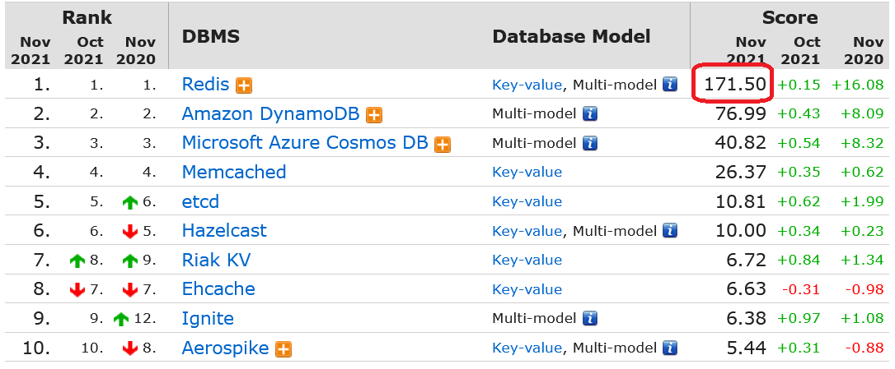
2009 год: Salvatore Sanfilippo aka antirez
TCL → C
2015: Redis Labs
June 2020: Salvatore Sanfilippo stepped down as Redis maintainer
Популярность огромна
Кэширование!
Координация работы микросервисов (в широком смысле слова)
Для сравнения: Default Max Connections
PostgreSQL: 100
Redis: 10000
Весь датасет в памяти.
На диск сбрасывается снапшот или лог транзакций.
По умолчанию ~ 1 раз в 2 секунды.
Аварийно завершившись, может потерять немного данных.
Salvatore любит вероятностные алгоритмы
Вероятностный алгоритм cache expiration
HyperLogLog
Изменения данных происходят в одном потоке, одно за другим.
За счёт этого — изоляция и атомарность операций.
Простота освоения / концептуальная простота
Производительность
Очень богатая функциональность! (почти что база данных)
Consistency:
Гарантий целостности, обычно предоставляемых базами данных, нет.
Роллбеки не поддерживаются, но есть optimistic lock, не позволяющий менять данные в случае потерянных обновлений.
Isolation:
Все записи и транзакции происходят по очереди, в одном потоке, изоляция полная.
Durability:
На диск данные периодически сохраняются, но между сохранениями могут немного потеряться ¯\_(ツ)_/¯
Распределённый режим не является изначальной задумкой
Есть репликация master-slave, как у классических БД
Возможна кластеризация, но с ограничениями
Не fault-tolerant система, вроде Zookeeper/etcd или Cassandra!
Локально в докере
docker run --name some-redis -d redis
docker exec -it some-redis redis-cli
Песочница (только для некоторых команд)
База данных выбирается командой SELECT
Независимые пространства имён ключей
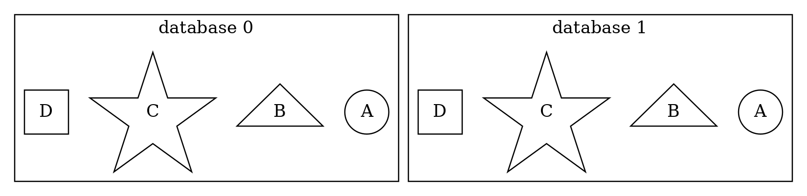
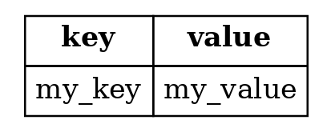
Общие | Строки | Числа |
Комбинированные | Мультиоперации |
Установить | Узнать | Сбросить |
This is what Redis does 10 times per second:
Test 20 random keys from the set of keys with an associated expire. Delete all the keys found expired. If more than 25% of keys were expired, start again from step 1.
[…]This means that at any given moment the maximum amount of keys already expired that are using memory is at max equal to max amount of write operations per second divided by 4.
current = GET(ip)
IF current != NULL AND current > 10 THEN
ERROR "too many requests per second"
ELSE
value = INCR(ip)
IF value == 1 THEN
EXPIRE(ip,1) //<---PROBLEM!!
END
PERFORM_API_CALL()
ENDИспользуя EVAL, запускать атомарный Lua-скрипт на втором шаге:
local current
current = redis.call("incr",KEYS[1])
if current == 1 then
redis.call("expire",KEYS[1],1)
end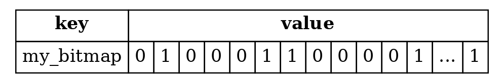 |
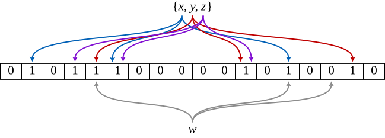
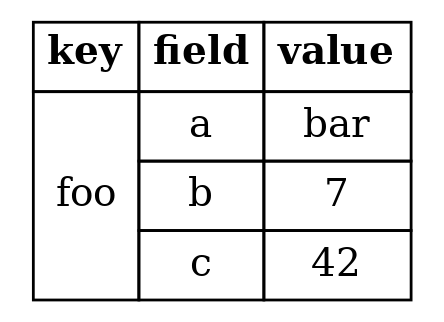 |
NB: expiration работает только на уровне структуры целиком, а не её отдельных ключей.
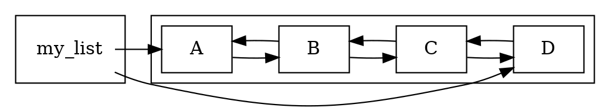
O(N) (N - длина списка) | O(1) |
BRPOPLPUSH (deprecated в пользу BLMOVE)
BLPOPRPUSH или BLMOVE
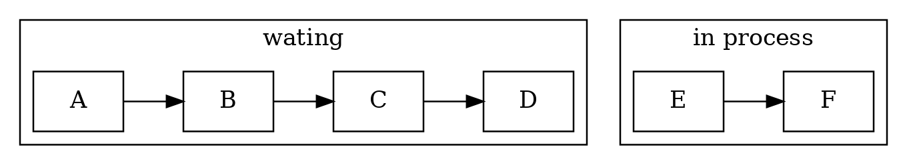
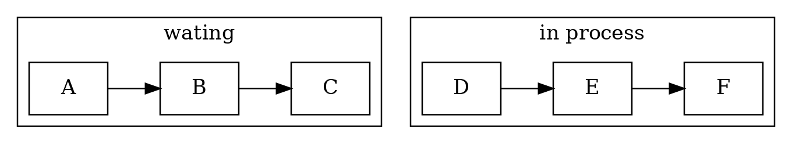
Один элемент | Случайный | Множества | Перемещение между множествами |
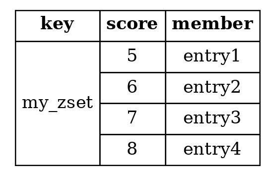 |
|
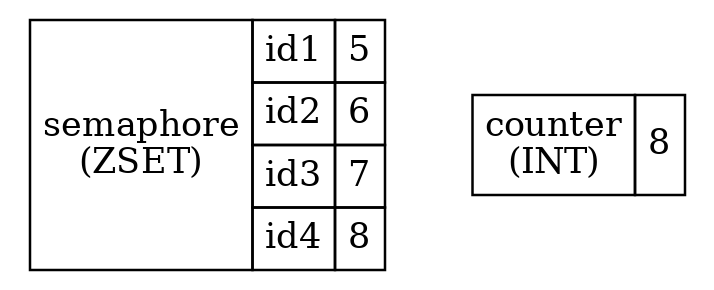
rank = INCR counter
ZADD semaphore my_id rank
if ZRANK semaphore my_id < limit
//we can move on
else
//we'll have to wait
ZREM semaphore my_idОбмен сообщениями
Подписка на каналы | Подписка по паттернам | Метаданные |
|
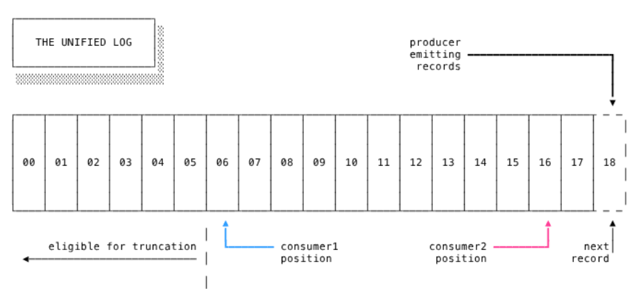
Описание: https://redis.io/topics/streams-intro
Подсчёт уникальных значений без сохранения самих значений
Геопространственный индекс с шарообразной моделью Земли
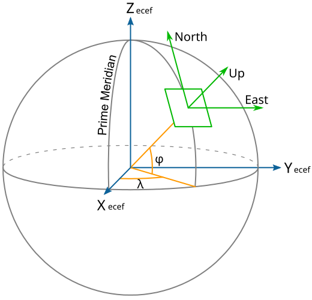 |
redis> GEOADD Sicily
13.361389 38.115556 "Palermo"
15.087269 37.502669 "Catania"
(integer) 2
redis> GEODIST Sicily Palermo Catania
"166274.1516"
redis> GEORADIUS Sicily 15 37 100 km
1) "Catania"
redis> GEORADIUS Sicily 15 37 200 km
1) "Palermo"
2) "Catania"EVAL "return redis.call('set','foo','bar')" 0
EVAL "return redis.call('set',KEYS[1],'bar')" 1 foo
SCRIPT LOAD "return redis.call('set','foo','bar')"
"2fa2b029f72572e803ff55a09b1282699aecae6a"
EVALSHA 2fa2b029f72572e803ff55a09b1282699aecae6a 0Операции | Выполнение транзакции | Отмена выполнения |
| |
Операции | Пример |
|
В чём проблема?
if not EXISTS lockname
SET lockname my_id
else
//lock is acquired, let's try another time...За время, меньшее чем timeout, мы должны что-то сделать, иначе блокировка от нас отвалится!
if SETNX lockname
EXPIRE lockname NX
else
//lock is acquired, let's try another time...Но в чём теперь проблема?
my_id = new guid
//or use MULTI..EXEC
if SET lockname my_id EX timeout NX
//success!
else
//lock is acquired, let's try another time...В чём проблема?
DEL locknameПока мы работали, мы могли не заметить что блокировку у нас перехватили по таймауту.
В чём проблема?
if GET lockname == my_id
DEL locknameWATCH lockname
if GET lockname == my_id
//we're still holding the lock!
MULTI
//don't delete it if someone acquired the lock this moment...
DEL lockname
EXEC
return 'lock released successfully'
return 'someone acquired our lock while we were busy...'(В действительности, это можно провернуть в Lua-скрипте простым if-ом без WATCH/MULTI/EXEC)
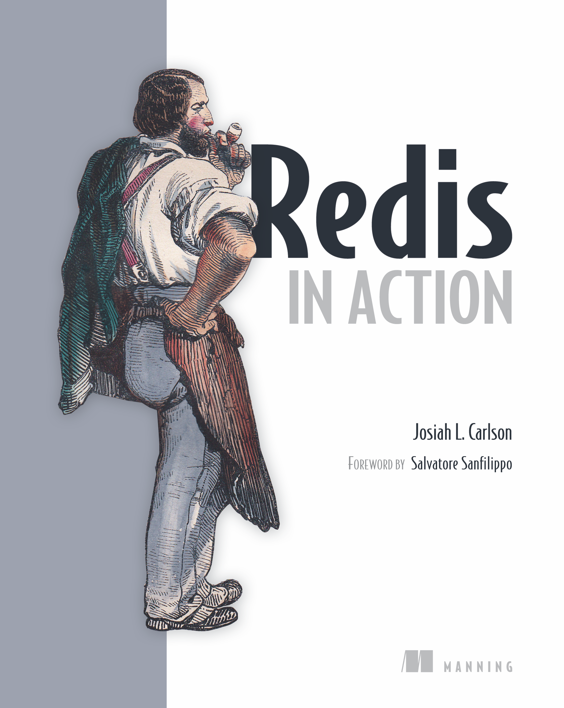 |
|